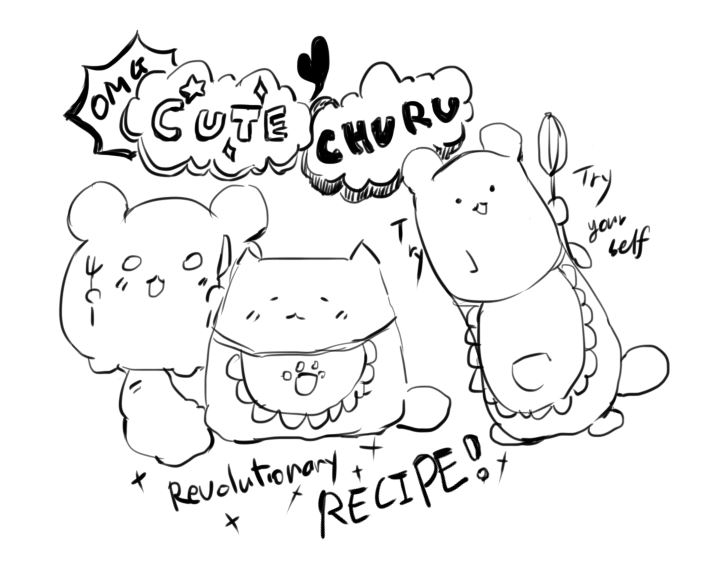

이 혁명적으로 귀여운 고양이인 쭈루를 소개하자면, 고양이라고 주장하는 쭈루는 자신이 고양이가 아니라는 것을 이미 알고 있을지도 모릅니다. 그러나 쭈루는 고양이임을 끊임없이 주장합니다. 그것이 그의 매력이라고 할 수 있습니다. 당신은 쭈루의 귀여움을 아는가? 귀엽고 동그랗고 짤막한 팔을 가진 푹신푹신한 우리의 쭈루가 무려 혁명적인 요리를 시작했다! 이 페이지의 특징으로는 귀엽다는 것입니다. 아주 중요하니까 두 번 쓰겠다. 쭈루는 귀엽습니다. 귀여운 쭈루는 지나치게 동그랗고 푹신한 고양이이므로 많은 재료들을 다룰 수 없어 간단한 요리만 합니다. 그러나 귀엽다! 쏘 큐트!
To introduce this revolutionary cute cat, churu, who claims to be a cat, may already know that They are not a cats. However, Churu constantly insist that Churu is a cat. That is Churu's charmmingu pointo. Do you know the cuteness of Churu? Our fluffy Churu, with cute round, short arms, has launched a revolutionary dish! The characteristic of this page is that it is cute. I say it twice because it's very important. Churu is cute. Cute Churu is a cat that is too round and fluffy, so Churu can't handle many ingredients, so Churu only cooks simple dishes. But it is cute! So cute! Mad cuteness!!Their cuteness drives me crazy.
この革命的に可愛い猫であるちゅるを紹介すると、猫だと主張するちゅるは自分が猫ではないことを既に知っているかもしれない。 しかし、ちゅるは猫であることを絶えず主張する。それがちゅるの魅力だと言いたい。ちゅるのかわいさを知っているか？ 可愛くて丸くて短い腕を持つふわふわしたちゅるがなんと革命的な料理を始めた！ このページの特徴としては可愛いということがある。とても重要だから2回言うぞ。ちゅるはかわいい。かわいいちゅるは丸すぎてふわふわした猫なので、多くの材料を扱うことができず、簡単な料理ばかりする。しかし、かわいい！！クッソかわいい！めっちゃかわ！さいかわ！